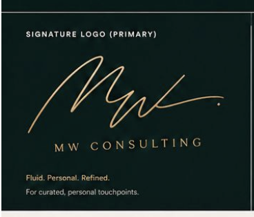

A dating coach for the people who’ve done everything else right.
Take the 2-minute quiz → Or book a Clarity SessionI work with high-achievers who are successful in every other area of life — career, money, health, friendships — and stuck in dating. I don’t teach scripts. I don’t do matchmaking. I don’t do therapy.
I help you see the pattern that’s costing you, name what you actually want, and become the person the right partner will recognize. It’s the inner work that the rest of dating is downstream of.
Every client moves through four pieces. Some need a year on one of them. Some get through three in a session. The order doesn’t change.
Your inner state before the date. Self-confidence, nervous-system regulation, the version of you that walks into the room.
Clarity on who you actually want — and what you actually need. Not what your parents wanted. Not what looks good on paper.
How you show up. Your profile, your photos, your conversation, your first-date energy. Aligned with who you really are.
How a connection becomes a relationship. When to escalate, when to step back, when to walk away while you still want to stay.
I’m based in Miami. I start every morning at the Pilates studio — one hour to set my mind and body before anyone else needs anything from me. Most of what I teach about dating I learned the same way: paying attention, every day, to what actually works.
I was pushed into this niche by my own life. I’ve been divorced. I know what it’s like to start over. I dated emotionally unavailable men for years before I learned the pattern was mine to break, not theirs. After that, I started seeing the pattern in other people’s stories before they could see it themselves. Friends came to me. Then friends of friends. Then strangers at midnight. After a decade of those conversations, this became the work.
I’m self-taught — no certifications, no degree in this. Just years of being the person everyone came to with the messy, complicated version of their love life. The 4-P Method came out of watching the same patterns repeat across hundreds of conversations.
I work with people who are successful in every other area of their life and stuck in this one. I’m direct. I don’t over-explain. I don’t do scripts, I don’t do hype, and I don’t do therapy. The work either lands or it doesn’t — and you’ll know which by the end of the first session.

Take the 2-minute quiz. I’ll send you 3 personalized answers from my playbook — in my voice, in your inbox, in 60 seconds.
Free. No call. No pitch. If something lands, you reply. If it doesn’t, no harm done.